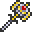
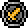
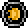
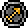
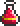
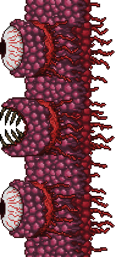
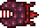
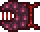
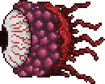

Wall of Flesh
| Drops | |
|---|---|
| Coins: | 8 |
| Item | Rate |
|  Pwnhammer | 100% |
| | 16.67% |
| | 16.67% |
| | 16.67% |
|  Warrior Emblem | 16.67% |
|  Sorcerer Emblem | 16.67% |
|  Ranger Emblem | 16.67% |
| 5-20  Healing Potion | 100% |
| Wall of Flesh | |
|---|---|
|  | |
| Statistics | |
| Type | Boss |
| Environment | The Underworld |
| AI Type | Wall of Flesh Body AI |
| Damage | 50 melee |
| Max Life | 8000 (shared) |
| Defense | 12 |
- For strategies on how to defeat the Wall of Flesh, see Guide:Wall of Flesh strategies.
The Wall of Flesh (WOF) is a boss located in The Underworld.
To summon it, a Guide Voodoo Doll must be thrown (or otherwise fall) into lava; the Guide must also be alive at that point in order to let the summon be successful. With the Guide sacrificed, the Wall of Flesh will spawn from the direction of the closest edge of the world and instantly cast the Horrified debuff on all players, which will last until the Wall or the players die.
The Wall of Flesh has several attacks. First of all, it has tiny mouths attached, called The Hungry, which move towards and damage players. As the Wall of Flesh's main body takes damage, these mouths deal more damage, and become more resilient to attack. It is therefore advised to take care of them first. When they've suffered enough damage, they will detach and attempt to fly into players. Its eyes will also shoot lasers. As its health decreases, the lasers increase in damage, speed and frequency. Finally, it will burp Leeches out of its mouth, which chase players.
If a player attempts to escape from the fight by physically going away or if they try to get behind the Wall of Flesh somehow, the mouth will release The Tongue, which will cling onto players, drag them in front of the mouth, and deal a large amount of damage while leaving the player immobilized in the process. Using the Magic Mirror at any moment during the fight causes instant death, with the message "<PLAYER NAME> tried to escape".
To destroy the Wall of Flesh you must attack its eyes or its mouth. They all share the same life counter, so shooting at any of the three will deplete the boss' total health. The "wall" itself is transparent to weapons, and shooting the Wall of Flesh there will not deplete its health. Unlike other bosses, this boss does not despawn if you die: it will remain alive until it reaches the other end of the map. Trying to summon it again before it despawns will simply destroy the Guide Doll (and kill the new Guide if one has arrived already).
When the Wall of Flesh is killed, it leaves its drops in a fully enclosed box of Demonite Bricks so they don't fall into lava, although if they did, only the Coins and Hearts would be destroyed.
After defeating this boss, your world will enter hardmode and you will face tougher enemies. This will also generate two diagonal stripes of The Hallow and The Corruption somewhere, usually near your original spawn point. To visualize this, they will form a V or X. These lines extending from The Underworld right to the surface, therefore creating Underground Hallow and Underground Corruption. The generation of these lines effectively means players are unable to stop the spread of the biomes by any means after the Wall of Flesh is killed.
Segments
| Drops | |
|---|---|
| Coins: | 0 |
| Item | Rate |
| | 100% |
| The Hungry II | |
|---|---|
|  | |
| Statistics | |
| AI Type | Demon Eye |
| Damage | 30 |
| Max Life | 80 |
| Defense | 6 |
| The Hungry | |
|---|---|
|  | |
| Statistics | |
| AI Type | The Hungry AI |
| Damage | 30 (WoF health 75%+) 45 (WoF health 50%+) 60 (WoF health 25%+) 75 (WoF health <25%) |
| Max Life | 240 |
| Defense | 10 (WoF health 75%+) 20 (WoF health 50%+) 30 (WoF health 25%+) 40 (WoF health <25%) |
| Wall of Flesh Eye | |
|---|---|
|  | |
| Statistics | |
| AI Type | Wall of Flesh Eye AI |
| Damage | 11-15 eye laser (depending on health) 50 melee |
| Max Life | 8000 (shared) |
| Defense | 0 |
Notes
- The Wall of Flesh can be summoned again once in hardmode. If, for some reason, you find yourself back in the Underworld, take care to avoid accidentally having a Voodoo Demon drop its doll into lava to avoid an unwanted summon.
- If you have problems getting the guide to spawn, make sure that there isn't a goblin army invasion in progress on the map.
From what has been seen, there is no way out of this.
Tips
- Certain consumables such as Water Walking Potion, Gravitation Potion and Obsidian Skin Potion can make traversing the underworld much easier.
- The Wall of Flesh's spawn location is determined by where the Voodoo Doll was thrown in relation to the center of the world. Thus, you can get the maximum space to fight the WOF by reaching the edge of the world and throwing the doll toward that edge.
- The use of heart statues is recommended, as they provide heart crystals (With a value of 20 HP) every time they are activated.
- Preparing the underworld for the battle is advised. Having a reasonably long straight path with no danger of getting stuck or falling can make the battle significantly easier, and can even block lasers from the lower eye if the path is at the proper height.
Trivia
- The treasure box can intersect other blocks or treasure box's without losing it's contents: http://wiki.terrariaonline.com/File:2011-12-11_00002.jpg#Summary
History
- 1.1: Introduced.
- Early mentions:
- Tiyuri tweet 24th October 2011
- Bunny Power 2nd November 2011
| Bosses |
|---|
| King Slime Eye of Cthulhu Eater of Worlds Skeletron Wall of Flesh The Twins The Destroyer Skeletron Prime |